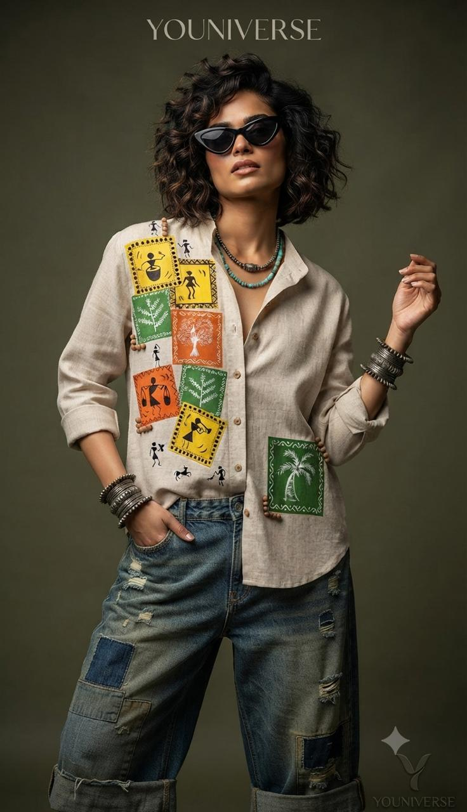
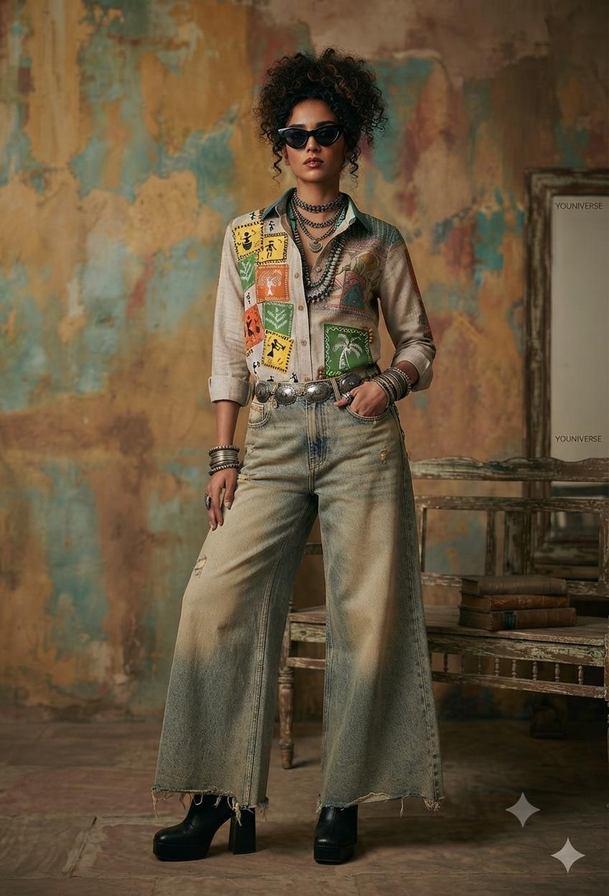
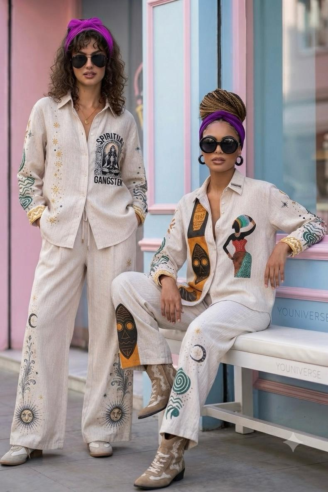

Craft
Why we still hand-paint
No two Youniverse shirts are ever quite the same — and that is on purpose.
Est. 2015 · Dadar West, Mumbai
Hand-painted shirts and patchwork denim, designed and made in-house — one Dadar workshop, one brushstroke at a time.
The Lookbook
Every image is shown in full without cropping. Explore the latest hand-painted Youniverse looks.
Our Story
Mahesh Nishar and Amit Nishar began with a small retail clothing shop in Kalyan. They expanded that foundation into three retail shops across Thane and Kalyan.
In 2015, the brothers began their own clothing manufacturing in a small space in Vikhroli, building both the production operation and the Youniverse brand from the ground up.
From Diwali 2025, Youniverse moved into a new, larger space in Dadar — the next chapter for a family business built on fabric, fit and original expression.
“We started small, kept learning, and kept making. The space is bigger now, but the hands-on way we work remains the same.”
The Journal
Notes on how the clothes are made, from the Youniverse workshop.

Craft
No two Youniverse shirts are ever quite the same — and that is on purpose.

Process
Patchwork denim gives leftover panels a new life, one seam at a time.

Future
The next chapter grows the wholesale journey while keeping production close to home.
Come Say Hi
Youniverse
Shop No. 09, Ram Shyam Krupa CHS,
Garage Galli, near Atlantic Plaza,
Dadar West, Mumbai, Maharashtra 400028
Hours: Mon–Sat, 10:30 AM – 8:30 PM
Message us on WhatsApp